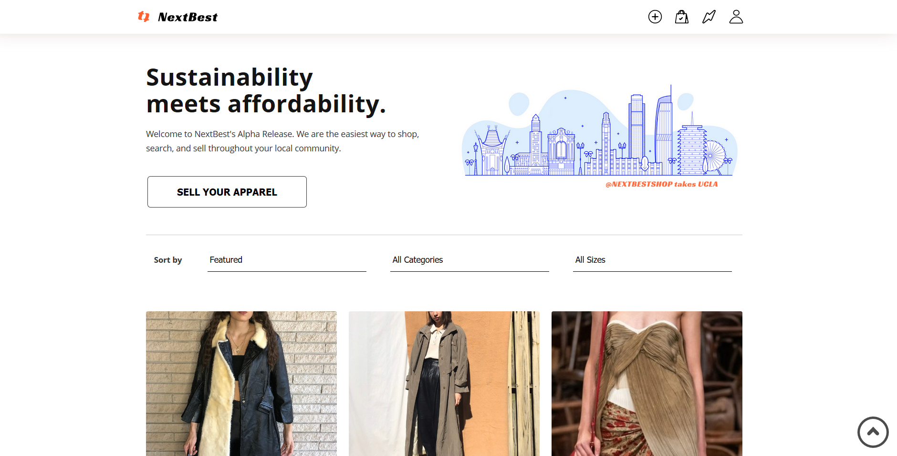
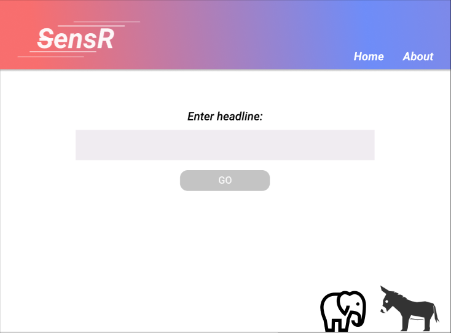
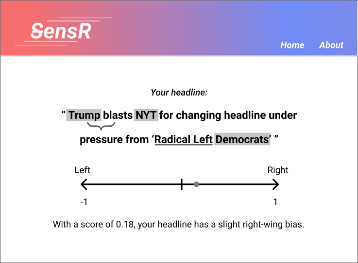
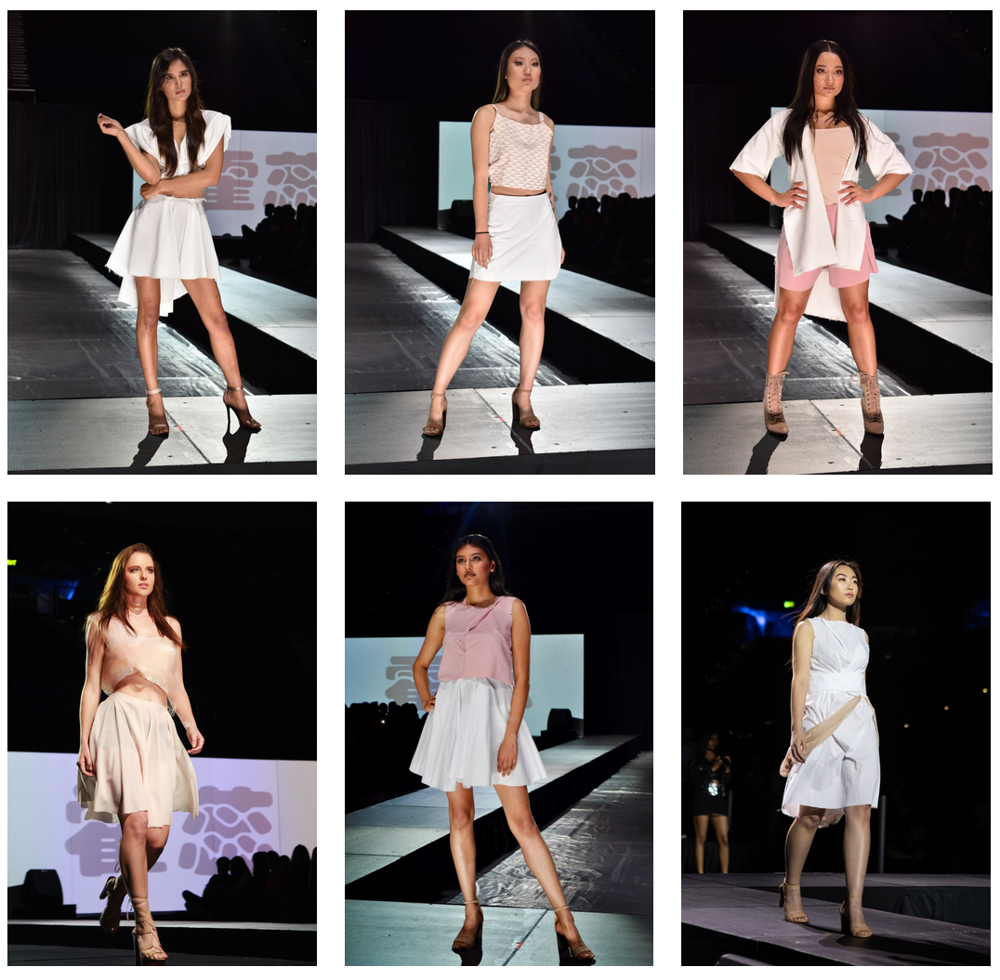

A clothing resale website targeted at college students. Made with React and various AWS services.
App design for a campus event aggregator/calendar.
Created with Python during a 12-hour hackathon. My team used a dataset of political headlines to train a model to analyze bias. We then applied it to other headlines to see if it was accurate. We found that most headlines had a fairly neutral rating, which meant that we needed to refine our training algorithm.
 Designed a 6-look collection for FAST at UCLA's annual runway show. Models from left to right: @allidoiswin_slow, @tigerlil_y, @angelakina_, @samanthasafarii, @amyypatell, @miadeki. Photos taken by @azeliamarissa and @shotbysel.
